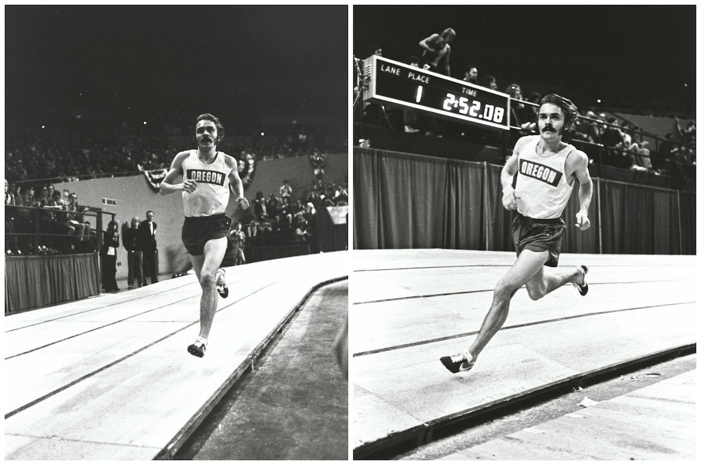

Nike: Det Hele begyndte med et vaffeljern...
Et vaffeljern og en seriemorders sidste ord har været med til at forme verdens førende sportsbrand, der
kontinuerligt skaber shoppemani gennem tidløs ikonografi og designerkollaborationer.
Nike har fået sit navn efter den græske gudinde for sejr, og der er da heller ingen vej uden om verdens mest
indflydelsesrige sportsbrand, hvis velkendte 'Swoosh'-logo pryder alt fra basis træningstøj til dyre
designersneakers.
Nike blev grundlagt i USA i 1964 under navnet Blue Ribbon Sports af den universitetsstuderende løber Phil
Knight og hans træner Bill Bowerman, som forhandlede det japanske sneakermærke Onitsuka Tiger.
Men da Bowerman fandt på at bruge sin hustrus vaffeljern til at fremstille rillede skosåler til løbesko,
lancerede firmaet sin egen produktlinje i 1971 - samme år, som BRS skiftede navn til Nike, og logoet 'The
Swoosh' blev skabt af den unge grafiske designer Carolyn Davidson.

Under de olympiske lege i 1972 præsenterede Nike den ikoniske løbesko, Nike Cortez, der gjorde mærket
verdenskendt. Skoene reducerede skader og sprang i øjnene med et ungdommeligt design, som atleter såvel
som en lang række kendte tog til sig - fra Farrah Fawcett i Charlie's Angels til Whitney Houston ved
Super Bowl i 1991, Tom Hanks i Forrest Gump og senest supermodellen Bella Hadid, der i år blev
frontkvinde for klassikeren.
Air Jordan & Just do it rammer 80'erne
I 80'erne blev Nike omfavnet af hiphopkulturen - Will Smith var blandt de mange fans - og i 1984 ramte
mærket guld med den første Air Jordan-sneaker, designet til basketballstjernen Michael Jordan. Air Jordan
blev en af Nikes mest populære modeller (Jay-Z har gået i dem siden 90'erne), der fortsat lanceres i limited
edition design, og handles for svimlende beløb på auktionssites.
80'erne var ligeledes Nike-årtiet, hvor alle friske drenge og piger drømte om at få fingre i Michael J.
Fox'
futuristiske Nike-sneakers fra Tilbage til fremtiden 2, og mærkets geniale slogan "Just Do It" blev opfundet
af reklamemanden Dan Wieden - inspireret af den kendte amerikanske seriemorder Gary Gilmores sidste ord
inden sin dødsstraf; "Let's do it"!
Nikes "Just Do It"-tv-spots har siden 90'erne vundet adskillige priser,
men en af brandets mest elskede
reklamer er faktisk slet ikke virkelig: I filmen What Women Want fra 2000 spiller Helen Hunt og Mel Gibson
markedsføringsguruer, der finder på en Nikeløbereklame til kvinder under sloganet "No games, just sports".
Den fiktive reklame fik så positiv respons, at Nike eftersigende overvejede at bruge den.
Designsamarbejder med Givenchy & Kanye West
I det 21. århundrede har Nike indgået designersamarbejder med nogle af modeverdenens største navne, som den
tidligere Givenchy-chefdesigner Riccardo Tisci og Comme des Garçons og været toneangivende i udbredelsen af
10'ernes athleisure-tendens, der endegyldigt har udvisket skellet mellem high fashion og sportswear.
Ikke alle Nikes kollaborationer er dog faldet lige heldigt ud: I 2009 indgik brandet samarbejde med Kanye
West, der designede skoen Nike Air Yeezy. Samarbejdet blev hyldet af sneakerheads, men West mente ikke, at
han blev betalt nok.
Rapperen hoppede derfor over til Adidas, der nu tjener vanvittige summer på
Yeezy-sneakers. Wests forræderi rykker dog ikke ved, at Nike er og bliver verdens førende sportsbrand - også
selv om tyske Adidas ånder giganten i nakken.